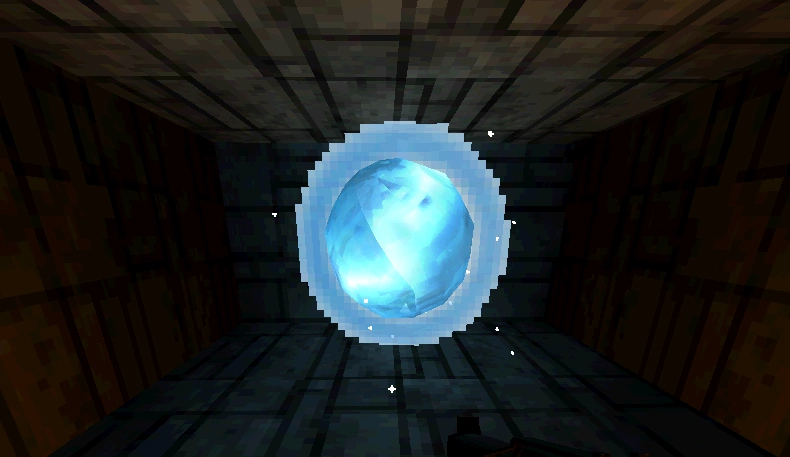
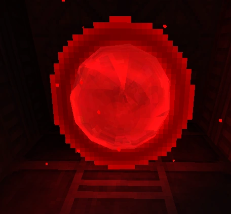
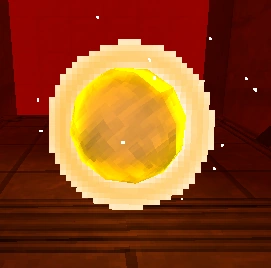

Welcome to the Secrets Page! Here, you can learn about the special orbs scattered across levels in ULTRAKILL. These orbs provide unique bonuses and are hidden in hard-to-reach or overlooked areas.
The Soul Orbs consist of two orbs in one body: a central opaque orb with a blue gradient and a translucent light blue orb surrounding it. They emit small light blue particles and explode into smaller orbs when collected. These orbs are often found in hard-to-reach locations and appear gray if already collected in a save file.
Blood Orbs are similar to Soul Orbs but have a blood-red color palette. When collected, they boost V1's health to 200 and recover any lost health and Hard Damage. After being collected, they turn into a translucent red orb with a cross encircled by a beveled square graphic.
Dual Wield Orbs have a golden-yellow color palette. Upon collection, they transform into a Dual Wield power-up. Unlike other orbs, Dual Wield Orbs respawn upon restarting from a checkpoint if the checkpoint was collected before the orb.
